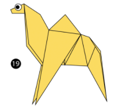
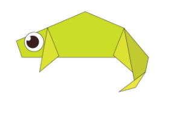
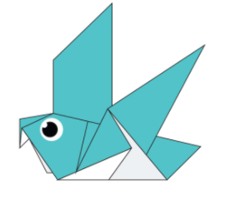
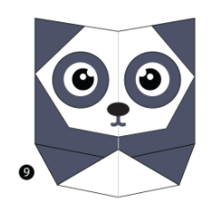

Origami Designs
About Us
Follow Us
CLICK ON THE RESPECTIVE IMAGES FOR THEIR TUTORIALS

Interesting Facts About CAMEL
- There are two types of camels: One humped or “dromedary” camels and two humped Bactrian camels.
- Camels have three sets of eyelids and two rows of eyelashes to keep sand out of their eyes
- Camels have thick lips which let them forage for thorny plants other animals can't eat

Interesting Facts About CHAMELEON
- UNLIKE MANY LIZARDS, CHAMELEONS CAN’T REGROW THEIR TAILS.
- SKIN CRYSTALS ENABLE THEM TO CHANGE COLOR AT WILL.
- THEY MAINLY CHANGE COLOR IN ORDER TO COMMUNICATE OR REGULATE BODY TEMPERATURE.

Interesting Facts About PIGEON
- THEY MIGHT BE THE FIRST DOMESTICATED BIRD.
- THEY UNDERSTAND SPACE AND TIME.
- THEY SAVED THOUSANDS OF HUMAN LIVES DURING WORLD WARS I AND II.

Interesting Facts About TEDDY BEAR
- The term bear-hug was first recorded in 1846.
- The Oxford English Dictionary dates the first use of the term teddy bear to 1906.
- In 1902 in Germany, Steiff launched “Bear 55 PB”, the first toy bear with jointed arms and legs.

Interesting Facts About PANDA
- A giant panda is much bigger than your teddy bear.
- Giant pandas are good at climbing trees and can also swim.
- An adult can eat 12–38 kilos of bamboo per day!

Interesting Facts About FLYING CICADA
- Cicadas can survive a huge fall as babies, or nymphs.
- They’re true bugs (from the order Hemiptera). So you can call them a bug and be scientifically accurate.
- Their predators, or animals that will eat them, don’t know they’re coming. Lots of animals, including birds, mice and raccoons, are in for a bug surprise!